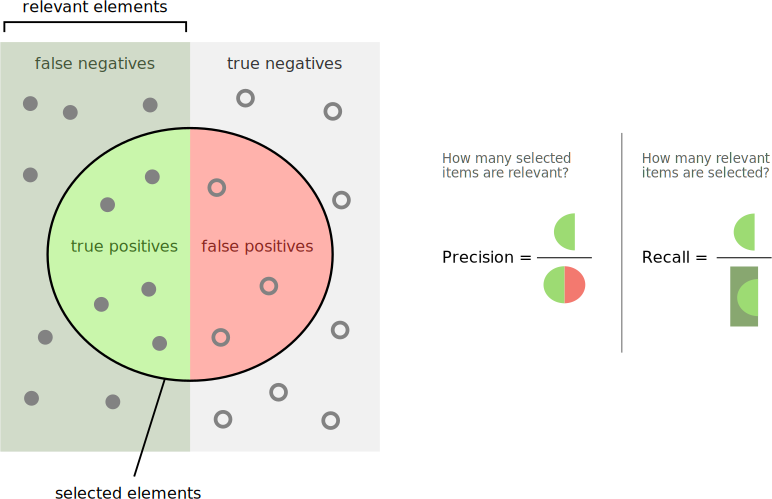

The hardest part of data science
Yanir Seroussi
yanirseroussi.com | @yanirseroussi | linkedin.com/in/yanirseroussi
Note: This talk is also available as a blog post.
What is the hardest part of data science?
Is it building predictive models?


Is it really data collection?
The hardest part of data science is getting good, clean data. Cleaning data is often 80% of the work.
Sorry DJ, but
time-consuming ≠ hard
What is it then?
Hard: Problem definition
Hardest: Solution measurement
Defining a data science problem
Common data science problems
"We have all this data, what can we do with it?"
"I want my data thing to perform better"
"Here's money and data, please generate more money and data"

Somewhat better-defined data science problems
- Build a model to predict sales of a marketing campaign
- Create a system that runs campaigns that automatically adapt to customer feedback
- Identify key objects in images
- Improve clickthrough rates on search engine results
- Detect whale calls from underwater recordings to prevent collisions
Many problems that actually matter...
...have solutions that are really hard to measure
Improve customer satisfaction
Increase the well-being of the population
Make people's lives better
Measuring solutions
Data is almost always censored
Ideal: run randomised controlled trials to measure treatment effects
Reality: constrained by ethics, practicality, budget, etc.
Examples: climate change, health effects of smoking
No metric is perfect, some metrics are harmful
The GDP framework cannot tell us whether final goods and services that were produced during a particular period of time are a reflection of real wealth expansion, or a reflection of capital consumption.
For instance, if a government embarks on the building of a pyramid, which adds absolutely nothing to the well-being of individuals, the GDP framework will regard this as economic growth. In reality, however, the building of the pyramid will divert real funding from wealth-generating activities, thereby stifling the production of wealth.
The whole idea of GDP gives the impression that there is such a thing as the national output. In the real world, however, wealth is produced by someone and belongs to somebody. In other words, goods and services are not produced in totality and supervised by one supreme leader. This in turn means that the entire concept of GDP is devoid of any basis in reality. It is an empty concept.
Trade-offs between different metrics
The data paradox and evaluation of metrics
All metrics create temptations. Even with great intentions and smart minds, data runs you faster and faster into a stupid self-destructive circle. Data can't decide things for you. It can help you see things more clearly if captured carefully, but that's not the same as deciding. Just as there is an advice paradox, there is a data paradox: no matter how much data you have, you still depend on your intuition for deciding how to interpret and then apply the data.
Put another way, there is no good KPI for measuring KPIs. There are no good metrics for evaluating metrics (or for evaluating metrics for evaluating metrics for evaluating metrics, and on it goes).
OK, let's just choose a metric and accept its imperfections. Are we done?
No, thanks to Goodhart's Law: "When a measure becomes a target, it ceases to be a good measure."
Even without manipulation and gaming, we are often dealing with moving targets
Good data scientists embrace uncertainty and ambiguity, but can still tell a simple story if needed